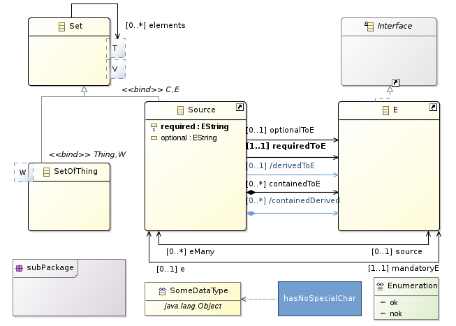
Once EcoreTools is installed in your environment, you can start using it either to create a new Ecore model from scratch or to edit an already existing model.
EcoreTools provide a wizard setting up your Ecore project. Click on File->New->Others... and then select Ecore Modeling Project.
The next page request a project name. The general convention is to use a java namespace notation for your project name. The project which is going to be created actually is an Eclipse plugin project, the name will be used for the plugin identification.
Changing the project name afterward is possible though error-prone and not without impact. Its better to get it right from the beginning.
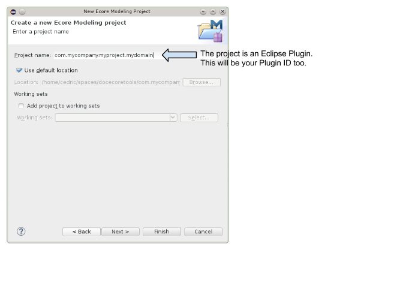
The next page request information about your Ecore model.
Here again, you can keep the default nsURI but keep in mind that its going to be the identifier of your domain within the EMF world. Changing it afterward might requires to update several files.
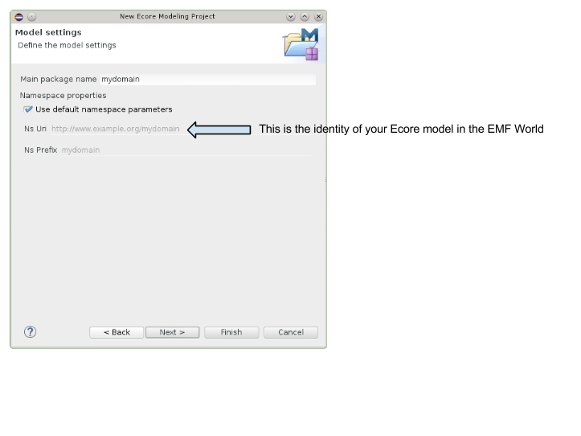
The next wizard page request which Viewpoints should be enabled. Viewpoints are a way to adapt the tooling regarding your current activity for instance Designing or Reviewing your Ecore model.
The Viewpoints you might enable are :
EReferences graphically.
It also provides a table editor to fill the documentation for every model elements and at last but not least it provides a Dependencies diagram you can use to inspect cross EPackage dependencies.
If you are really getting started, Design is a good choice, in case of doubt, select everything.
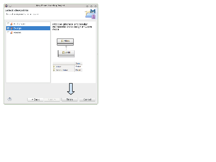
Once you clicked on Finish and the wizard prepared the project, this is what you should have.
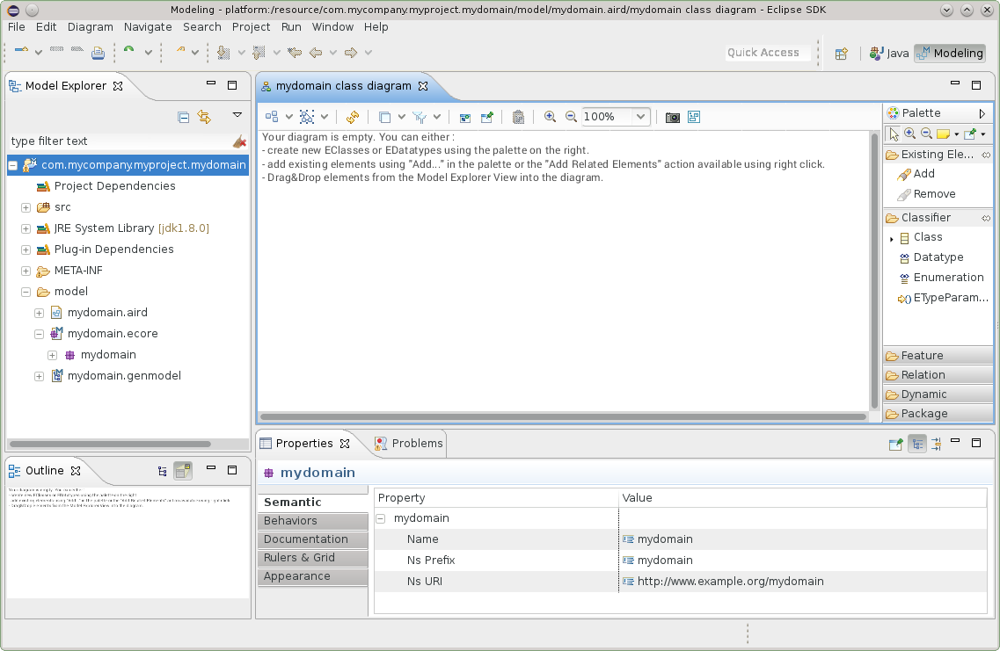
The Modeling Project is a facility provided by Sirius which handles models within the scope of a project. What does that mean ? Any model which is in the project is going to be loaded by Sirius behind the scene and its elements will be available in your editors.
This mode of usage is designed so that you can work with your models easily, but you might want to have more control. In this case, you can use EcoreTools just by creating Representations Files.
Each modeling project has a set of viewpoints which are enabled. This controls what kind of representations you can create on the Ecore models inside the project.
To select which viewpoints are enabled on your project, simply use the Viewpoints Selection action in the context menu of the project itself.
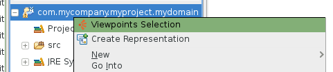
A dialog box will open which will show you all the viewpoints which are compatible with your project (depending on the kind of models it contains). You can check or un-check each viewpoint individually to enable or disable it, and click OK to validate your choice.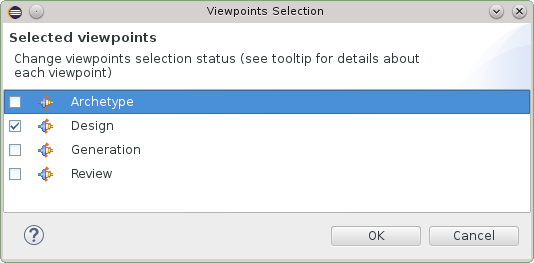
Once the
Viewpoints are selected you can create representations : diagrams or tables. All these representations are stored in the
.aird file within the project.
There are several ways to create a representation. You can browse a model in a modeling project and right click on New Representation.
Depending on the type of model element you clicked on, different types or representations might be provided. For instance if you right-click on an
EPackage you will have :
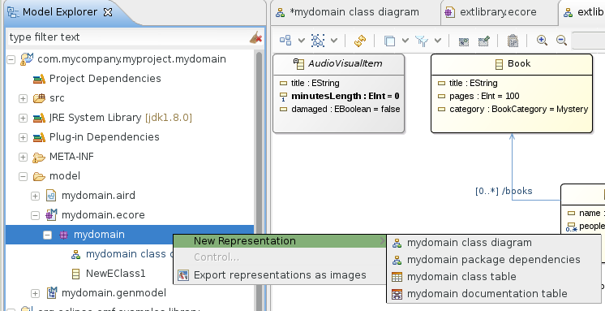
And other representations might be created on a
GenPackage :
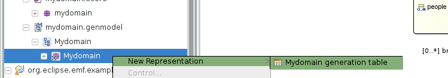
You can also create a new representation by clicking on the
Modeling Project itself :
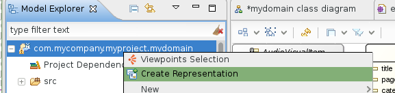
And then select the kind of representation you want to create.
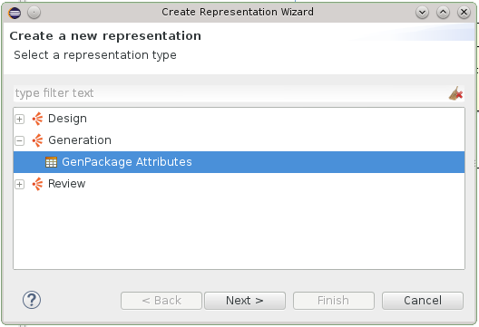
In this case the tool will guide you to select a model element for which this representation makes sense.
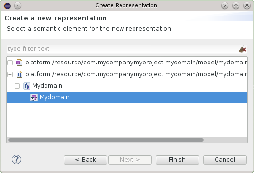
It is possible to load models which are not in the current project by adding
Project Dependencies. You can right click on the
Project Dependencies item and add another Ecore file (or type the complete URI)
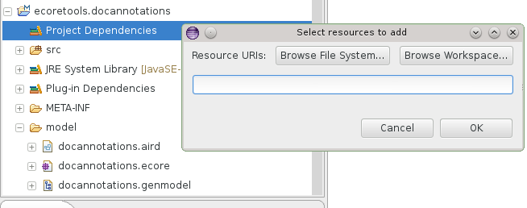
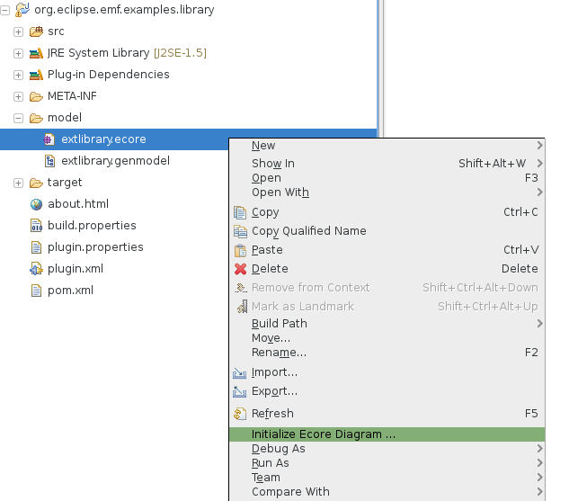
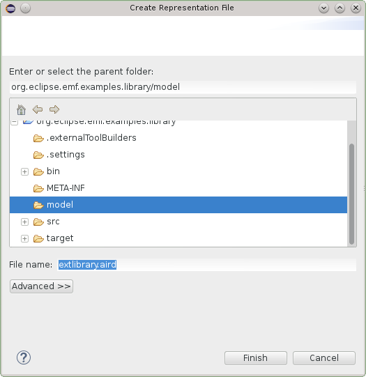
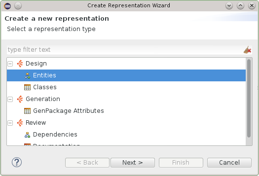
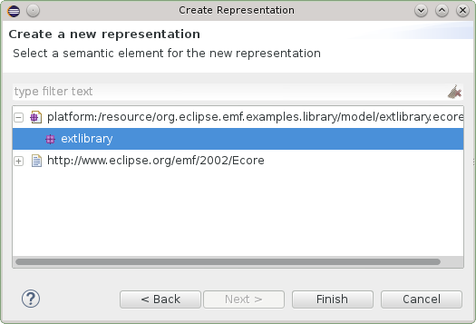
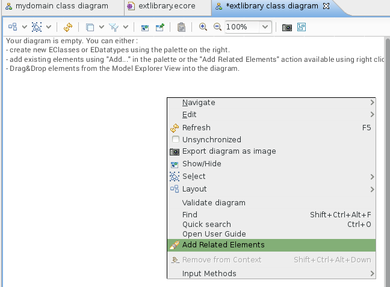
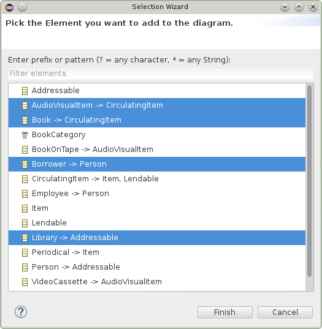

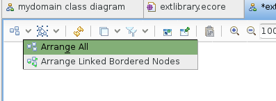
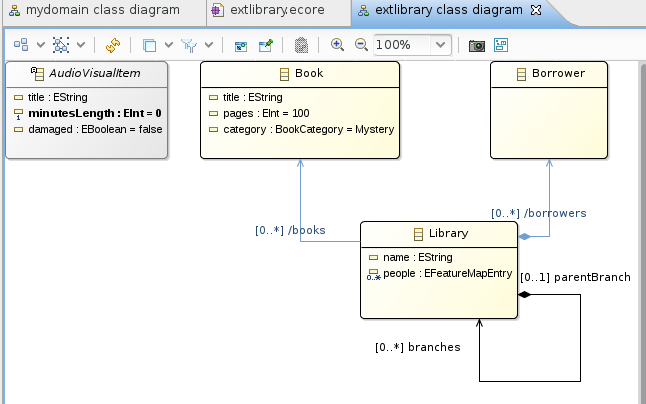
The Entities diagram editor has several purpose :
This diagram editor is
unsynchronized meaning it will not automatically display all the
EClasses of the current
EPackage but only those that you
explicitely select either by drag&dropping an
EClass instance from the
Model Explorer into the diagram, by using the
Add tool from the palette or
using the
Add Related Elements contextual action.
When clicking on Add Related Elements from the background of the diagram, all the EClasses which are contained in the current EPackage will be proposed. This is a convenient way to import
all the EClasses of a given EPackage into a diagram.
References, super types, attributes and operations are automatically imported in the diagram, if you want to remove some of them from a diagram you can either use the
Hide contextual action or leverage one of the filters to hide, for instance, all the
derived references.
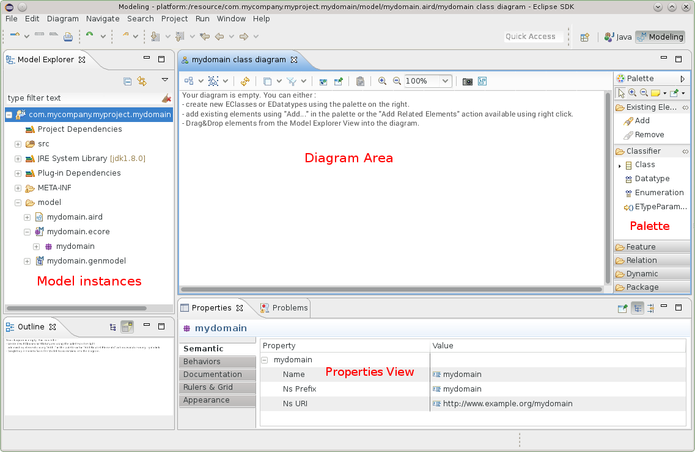
Here is the palette of the Entities diagram editor when both the Design and Review Viewpoints have been enabled.
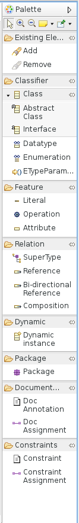
Several layers are provided by the editor. When activating a layer some shapes and colors will changes and specific tools will be available to address your current concern.
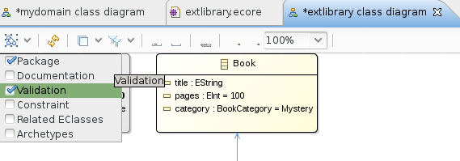
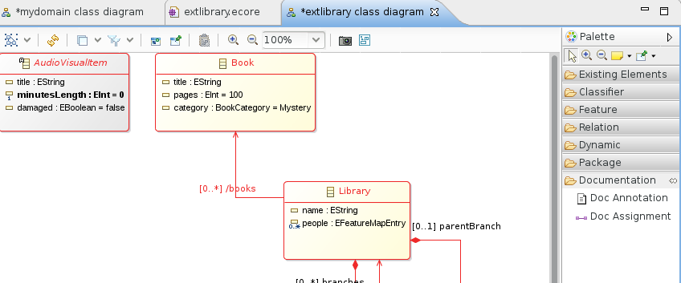
For example, activating the Documentation layer will transform the shape of all the model elements to add a red border if it is not documented. Two new tools are appearing then in the palette so that you can create the doc annotations.
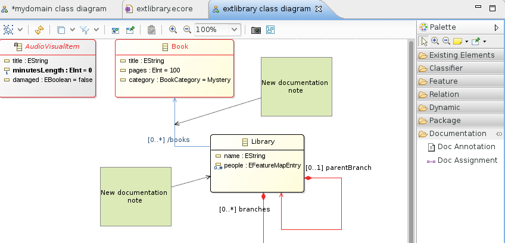Once your diagram gets populated it might get harder to find a specific EClass. Just like in most of the other Eclipse editors,
CTRL-O will summon a small popup which is very convenient to
find an element. You can select the element in the list and when validating with
ENTER the diagram editor will select and reveal this element.
You can use the tools defined in the palette to create new EClasses or EDatatypes :
abstract=true
interface=true and
abstract=true
Each one of the Class related tools might also be used to change some properties : Using the tool
Abstract Class by clicking on an existing
EClass will set
abstract=true,
Using the tool
Interface by clicking on an existing
EClass will set
interface=true and
abstract=true
This is especially convenient when using the graphical modeler in full-screen with no other view and clicking on the contextual shortcut which appears
a few milliseconds after you select an EClass.
Shortcuts are available in the palette to create different kind of EReferences :
0..* cardinality.
eOpposite of the other one.
0..* cardinality.
You can adapt the
EReference properties at any time and the diagram will reflect your changes. If a non-contained reference is changed into a containment reference then the decorator
at the source of the
EReference will be adapted.
Shorcuts are available in the palette to create difference kind of EStructuralFeatures, notably:
I the case of EAttribute instances, some typing shortcuts are available. See the «Editing Shortcuts» section.
Using the
Operation tool from the palette and clicking on an
EClass in the diagram you can create a new
EOperation instance.
To edit the EOperation signature you have several choices, you can directly type it in the diagram, EcoreTools expects a format like :
name
( param1 : TypeOfParam1, param2 TypeOfParam2
) :
returnType
You can also directly set the values and create new EParameter instances through the Properties View.
Hitting
DEL on the keyboard will delete the selected model element and reset all the cross references to it. If you want to remove an element from
a given diagram without actually deleting the element, you can either use the
Remove tool which is available in the palette or the
Delete from Diagram
contextual action available with a right click.
If the layer
Validation is enabled, then any invalid element will have red borders. To understand what is the error exactly, just keep your mouse pointer above the element and the tooltip will provide you a textual feedback.
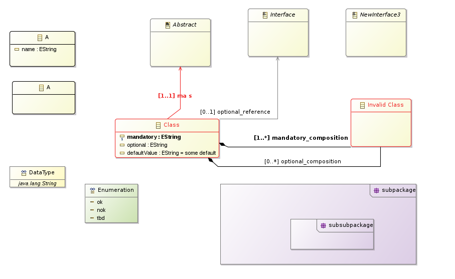
A lot of shortcuts are available to be more efficient when editing an Ecore model. From a general point of view, just edit the label of a given shape and the diagram editor will try to figure out what you want to edit. For instance:
1 on an
EAttribute or
EReference will switch the cardinality to
1..x without updating anything else.
* on an
EAttribute or
EReference will switch the cardinality to
x..*
:SomeTypeName will set the type of an
EAttribute without updating the name.
someName will update the name, keeping the type and cardinality as-is.
Shortcuts appearing contextually to a given
EClass will allow you to quickly switch the
EClass to being
abstract or
interface
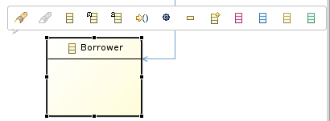
EcoreTools provides features which are specifically designed to ease the exploration of an existing Ecore model and assit you in
creating a diagram to document this exploration.

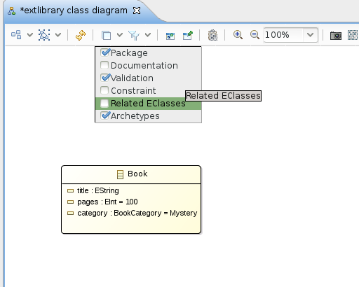

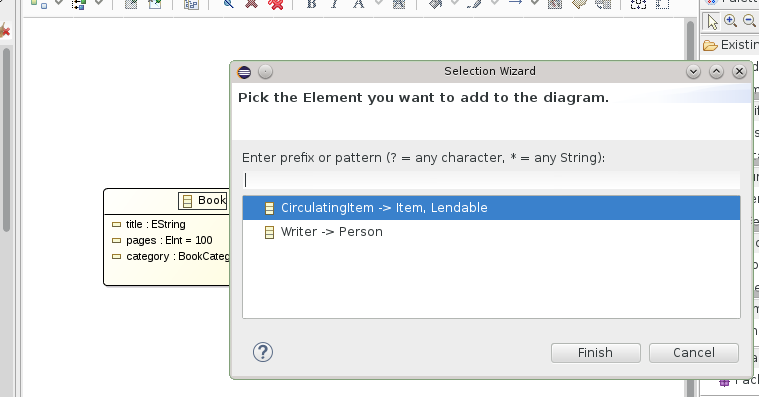
At any time you have several means to edit the element properties. You can either use the contextual action
Show Properties View and then edit from this view or
double-click on an element to open a wizard dedicated to the edition of the properties.
You can model EGenerics using the
ETypeParameter tool in the palette. When used on an EClass this tool will create a new Type parameter. Once it is created
you can directly use it in
EOperation signatures or even create an EReference targeting this parameter.
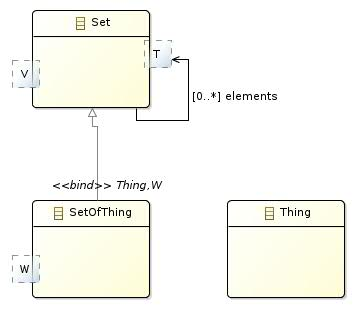
Subclasses will have to specify bounds for this ETypeParameter, either by binding to an ETypeParameter of their own or by specifying another EClass.
You can specify domain constraints on an
EClass. To do so you need to enable the
Constraints layer. Any constraint which is already defined
in the model will be automatically imported in the diagram. You can add a new one and bind it to an
EClass using the
Constraint and
Constraint Assignment
tools available then in the palette.
Constraints are stored in the model using the
EAnnotation format supported by the EMF code generation and runtime. The input which is expected when
you edit a constraint note is a comma separated list of names representing those constraints. For instance :
isWrittenByAnAuthorizedAuthor, isAvailable
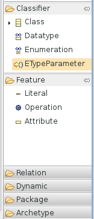
EMF will detect these annotations and generate dedicated Java methods based on this name, you will have to implement them then.
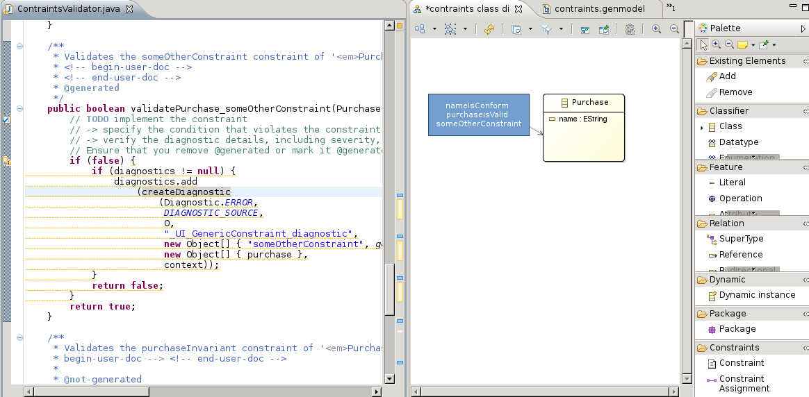
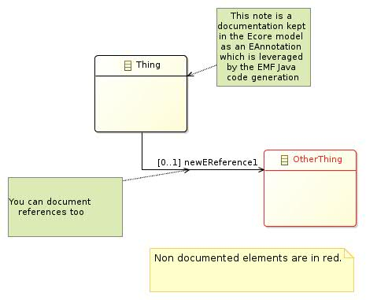
The documentation table displays all the EPackage elements as a hieararchy in the first column and the corresponding documentation annotation in the second one.
To edit an existing annotation or to create a new one, select the corresponding cell and type using the keyboard.

A Depdencies diagram can be created from en EPackage when the Review viewpoint is enabled for your project.
This diagram is helpfull to visualize and analyze the direct dependencies between two EPackage.
To leverage it, use the
Add... tool from the palette to import the
EPackage instances you want to inspect. These instances will be displayed as list containers.
If any dependency exist between two
EPackages then an edge appears in the diagram. Within the
EPackage representation list the
EClasses instances which
are involved in this dependency will automatically be displayed by the tool.
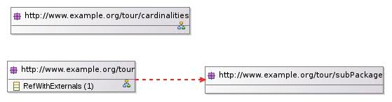
Hovering your mouse over such an EClass to have an explanation of the dependency.
EcoreTools directly edits the Ecore model in a standard way, no special operation is required to leverage the model itself.
You can open a
GenModel instance and launch the EMF code generation for instance.
A specific tool in the palette named
Dynamic Instance allows you to quickly create an instance of your domain model without requiring any code generation.
To use it select the tool
Dynamic Instance and apply it on the
EClass of your choice in your diagram. A wizard will be opened to guide you through the process of
creating this XMI file, once the file is created the
EMF Reflective Editor will be opened to edit it.
You can export an existing diagram in several format by right-clicking on the diagram itself.
You can also export all the representations stored in a
.aird file by right-clicking on the file in the
Explorer and selecting
Export as images....
Indeed from version 2.0 EcoreTools moved from GMF Tool to Sirius as a backend technology and that meant adopting the .aird file format for diagrams and other representations.
Writing a migration tool from .ecorediag to .aird is possible though we’ve seen that in practice if you have a .ecorediag opened and want to reproduce the corresponding diagram using Sirius 2.0, you can do so quite quickly.
As I said, this is technically doable so if you have hundreds of diagrams and want a financial quote related to this work feel free to ask.
To ease the transition both implementations have been provided with EcoreTools 2.0 but only the Sirius based one has been aggregated in the Eclipse Luna update-site. You can install the legacy editor which supports the .ecorediag format using the EcoreTools update site .
You can remove the validation marker by using the «Problems» view, select the error which bothers you, right-click, and delete. It will disappear from the diagram then.
To quickly find something in a diagram just type
CTRL+O, type a partial name and select it. The editor will reveal it for you.
You can interact with the team behind EcoreTools by using the Eclipse Forum